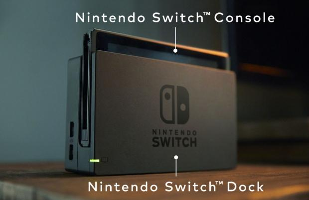
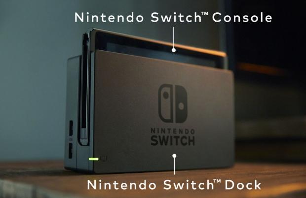

The Nintendo Switch is a home console that can also be taken place. There are a few different ways you can play on the nintendo switch.
- Tv Mode - The Nintendo Switch can be docked and you can use the two joycons as one controller or you can use each joycon as a controller and play on the tv.
- Handheld Mode - The Nintendo switch can be also used as a handheld console. The joycons attach to the side of the nintendo switch and act like one controller. Or in handheld mode the joycons can come off and you can use them as seperate controllers to play with a friend.